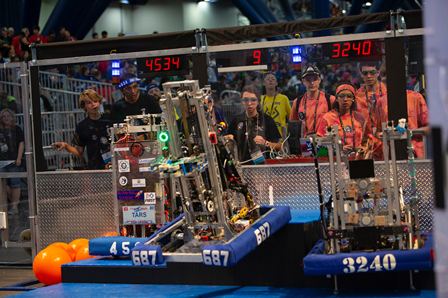
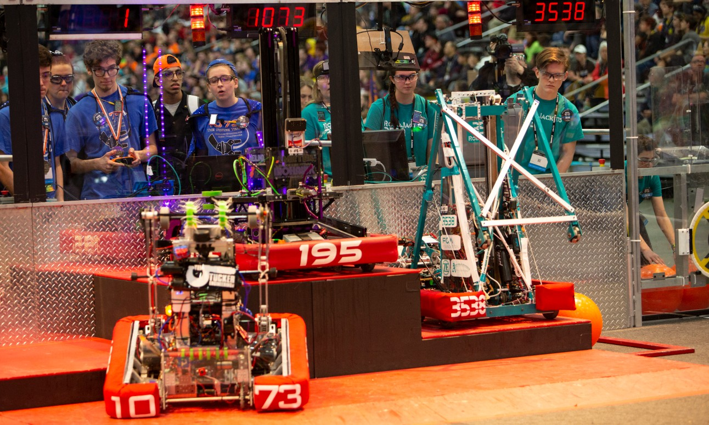
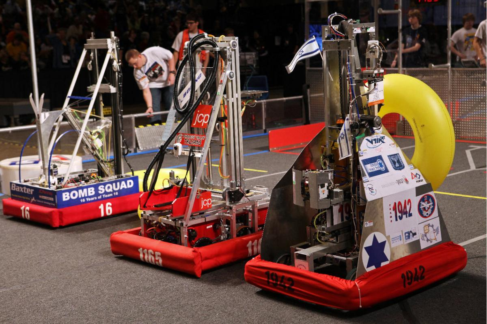
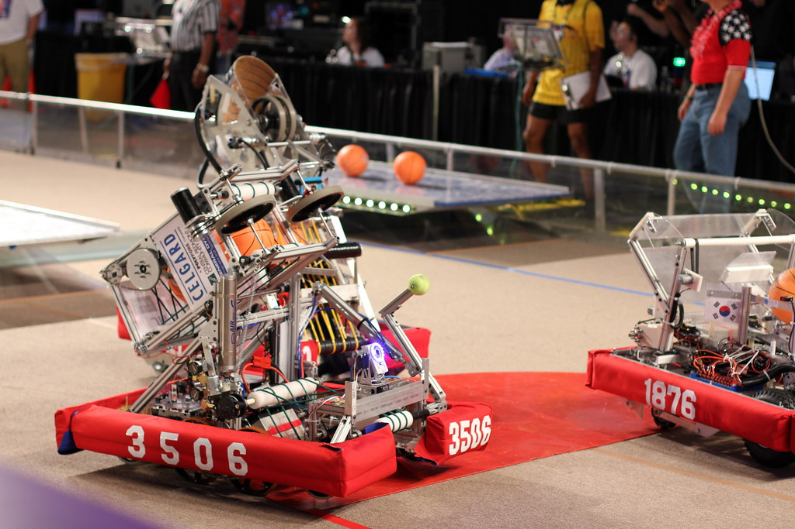

Sob regras estritas, recursos limitados, e a orientação de mentores engenheiros, professores, gestores, pais, ex-alunos etc, equipes com mais de 15 estudantes projetam, constroem e programam robôs para realizar tarefas desafiadoras em uma arena cheia de competidores. Além disso, eles ainda precisam arrecadar fundos, desenvolver uma marca para seu time, adquirir habilidades de trabalho em equipe e envolver sua comunidade por meio da ciência e tecnologia. Durante esse processo, os participantes desenvolvem habilidades técnicas mas também interpessoais, como liderança e comunicação. Ao concluirem o Ensino Médio, os estudantes são elegíveis a aplicar para 80 milhões de dólares em bolsas de estudo universitárias. “É o mais próximo da engenharia do mundo real que um aluno pode chegar.” – FIRST®